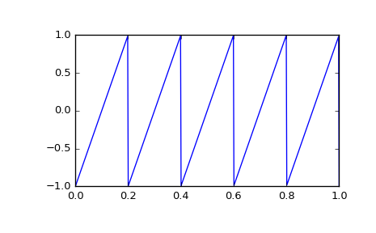

scipy.signal.sawtooth¶
-
scipy.signal.sawtooth(t, width=1)[source]¶ Return a periodic sawtooth or triangle waveform.
The sawtooth waveform has a period
2*pi, rises from -1 to 1 on the interval 0 towidth*2*pi, then drops from 1 to -1 on the intervalwidth*2*pito2*pi. width must be in the interval [0, 1].Note that this is not band-limited. It produces an infinite number of harmonics, which are aliased back and forth across the frequency spectrum.
Parameters: t : array_like
Time.
width : array_like, optional
Width of the rising ramp as a proportion of the total cycle. Default is 1, producing a rising ramp, while 0 produces a falling ramp. width = 0.5 produces a triangle wave. If an array, causes wave shape to change over time, and must be the same length as t.
Returns: y : ndarray
Output array containing the sawtooth waveform.
Examples
A 5 Hz waveform sampled at 500 Hz for 1 second:
>>> from scipy import signal >>> import matplotlib.pyplot as plt >>> t = np.linspace(0, 1, 500) >>> plt.plot(t, signal.sawtooth(2 * np.pi * 5 * t))
